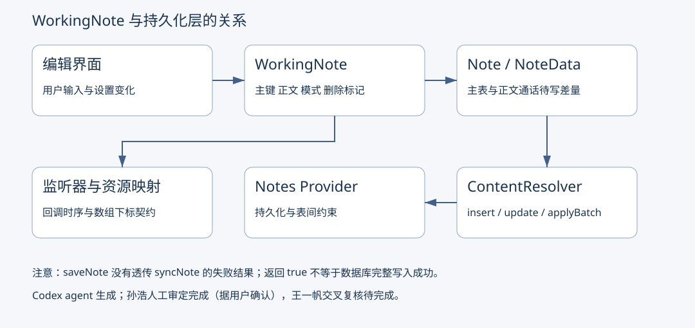

model + tool：六文件中文注释、状态模型、有效代码行统计与认知评分。

目标仓库：CYChigga/se-group1-notes-complexity。
工作分支：feature/P2-model-tool；目标分支：main；复核人：王一帆。
团队源码基线：b94cc3908dbdc5784972478431f16c7d6904905a。
README 读取自 main 的 3a23262be81826f19e60b8374c1ef69feedc0fc3。
六个源码文件每个一个 annot(P2) 提交，只增加中文注释，共 298 行。
报告和脚本位于本目录；未修改其他组员源码，未合并或推送 main。
在本目录中执行，Python 3.9+，Git用于第三条验证：
python tools/test_measure.py python tools/reproduce.py python tools/verify_repository.py
依赖随 tools/vendor 提供。test_measure 验证七项边界；reproduce 验证归档基线和六份注释副本；verify_repository 验证实际团队 src 对比团队基线的全部 39 文件，确保只新增六文件中文注释、Java token 和方法度量均不变。未执行 Android 编译或设备测试。
统计实际团队当前源码，可从仓库根执行：
python deliverables/P2-sunhao/tools/measure.py --root . --out <自选输出目录>
五个超均方法及原始行号见 metrics/selected_five.csv；请王一帆沿用同一组方法制作 CFG 与 McCabe 度量。当前认知评分是小组自定义双维度量表，非 Sonar 认知复杂度或 Ousterhout 官方数值公式。
AI工具为Codex，新增注释、脚本和分析材料的AI来源及取舍记录见docs/04、AI_content_review.csv和AI_decisions.csv。原交接包孙浩人工审定状态依据此前用户确认；本次仓库适配的验证脚本和文档修订列为待复核，不推定已经人工审定。王一帆交叉复核仍待完成，GitHub账号待提供。
王一帆的P5远端分支目前与原始导入基线相同，没有待孙浩复核的实现提交，不能登记交叉复核通过。组长在双方实际复核后合并PR。
本目录不保留初次独立压缩包的构建器；旧交接包保持原样。新增source/P2-comments.patch来自当前团队分支的六个注释提交，可与Git diff对应。
统计脚本及结果已完成自动复现检查，孙浩本人已完成人工审定。AI使用情况见专门说明。
固定上游为 https://github.com/MiCode/Notes ，提交81a66024fe48eaa2206b854430856fe3875ff3ba。交接包保留完整基线归档，39个Java文件逐个解析，解析失败直接报错，不静默跳过。
| 指标 | 实测值 | 含义 |
| Java文件 | 39 | src目录递归统计 |
| 原始物理行 | 10002 | 含空行与已有注释 |
| 全项目有效代码行 | 7395 | 至少包含一个Java词法token的物理行 |
| 命名类型声明 | 65 | 56个class、8个interface、1个enum；不把匿名类算命名类型 |
| 有实现的方法 | 448 | 含内部类和匿名类方法，排除无实现声明 |
| 构造器 | 38 | 单列，不进入本次方法均值 |
| 平均有效方法行数 | 12.79241071 | 所有448个有实现方法的SLOC算术平均 |
7395与组长旧基线吻合；65个命名类型、448个有实现方法与旧报告的45类、394方法不同，不能直接替换后混用。原因涉及类/接口/枚举、内部类、匿名类、构造器和无实现声明的纳入方式；尚未取得旧统计脚本，不能宣称已经完全解释旧数字。任务书约40类170方法是近似描述，不应为了迎合数量漏掉真实方法。
方法起点为AST报告的声明行，终点为配对结束花括号所在行；包含声明和独立花括号行，排除纯注释及空行。匿名回调单列，外层方法词法范围仍包含其声明，存在范围重叠，因此不能将方法SLOC总和当作项目SLOC。重载通过签名、路径和起始行区分。
操作符采用明确可复现的扩展词法口径：Operator、Separator、Keyword、BasicType、Modifier五类token值的去重数量；标识符、字符串、字符和数字字面量不计入。分隔符与声明关键词计入。这不是完整Halstead体积、难度或工作量公式，也不是唯一合法的操作符分类法；组内若改口径，应重跑全部方法。
需要Python 3.9及以上。javalang 0.13.0与six 1.17.0已经随tools/vendor附带，无需联网安装，无需Android SDK。
python tools/test_measure.py python tools/reproduce.py
reproduce.py在临时目录展开source/Notes-baseline.zip；输出metrics/reproduced；再覆盖六份注释源码，重测并验证有效行和操作符数量不变。原始实测留在metrics/baseline。所有CSV采用带BOM的UTF-8，方便Excel查看。完整数据中构造器也列出，但above_mean为false，不进入候选均值。
M1–M3覆盖最大规模的JSON解析与远端同步；M4–M5覆盖孙浩负责范围中的差量写回和文本导出。五个均大于统一均值，不要求只取前五名。暂不选showCreateOrModifyFolderDialog，因为它内嵌多个回调，三法对齐前需额外约定回调控制流归属。
五方法表见selected_five.csv，完整超均候选见above_mean_candidates.csv，操作符逐项计数和带原始行号代码见evidence目录。王一帆应使用同一提交、同一组方法绘制控制流图；本包不冒充已完成王一帆负责的五张CFG与人工复核。
孙浩本人已完成人工审定，王一帆交叉复核待完成。源码定位均指固定基线，注释版行号会向后移动。
WorkingNote.java 34–368行承载编辑会话：正文、模式、提醒、背景、小部件及监听器；Note.java 33–253行承载主表和正文/通话数据表的待写差量。真正存储由ContentResolver访问Notes Provider完成。编辑对象并非数据库实体的实时镜像。
用I=(mNoteId>0)、E=TextUtils.isEmpty(mContent)、D=mNote.isLocalModified()、X=mIsDeleted表示状态。isWorthSaving原始219–226行等价于：
值得保存 = !X && (( !I && !E ) || ( I && D ))
新草稿只看正文非空，不要求D；已有便签只看D，不要求正文非空。四个量不是四个独立枚举，也不能将X覆盖前的脏状态永久丢弃。
| 场景 | 条件 | saveNote行为 |
| 空新草稿 | I=0,E=1,X=0 | 返回false，不创建主表记录 |
| 非空新草稿 | I=0,E=0,X=0 | 先创建主表主键；主键为零则false |
| 已有未改便签 | I=1,D=0,X=0 | 返回false，这不是写入故障 |
| 已有脏便签 | I=1,D=1,X=0 | 进入同步流程，即使正文清空也可保存 |
| 标记删除 | X=1 | 返回false；markDeleted本身不删除数据库 |
| 撤销删除标记 | markDeleted(false) | 恢复由主键正文差量决定的保存资格 |
新便签构造器105–115行设置主键零；createEmptyNote 177–183行再设置背景和小部件信息。加载入口186–188行调用已有记录构造器，loadNote 127–147行读主表，loadNoteData 149–175行按MIME恢复正文及关联行主键。空游标对象与零行游标的处理不同，不能把load描述为对所有不存在记录都可靠返回null。
setWorkingText 284–289行先比较新旧正文；变化才登记正文差量。Note.setNoteValue及NoteData字段设置会更新主表本地修改标志与时间。getModifiedDate读取的会话缓存未随每次修改刷新，不能当作落库后的最新时间。
setBgColorId在回调之后才登记差量；setCheckListMode先用旧值和新值通知，再更新mMode；setAlertDate即使时间未变，也可能触发监听器。这些调用顺序会影响回调可观察的状态。
convertToCallNote 291–295行把父目录差量设置为通话文件夹，但没有同步更新mFolderId缓存；图表和报告应区分“待写目录”与“会话缓存目录”。
saveNote 190–213行在通过资格判断后，必要时创建主键，再调用Note.syncNote。源码忽略syncNote的boolean返回值，随后仍可能通知小部件并返回true。因此不能画出“true必然代表数据库同步成功”的状态转换。
Note.syncNote 103–133行在主表更新零行后仍继续，并清空主表差量。NoteData.pushIntoContentResolver 181–251行对新正文/通话记录即时insert，对已有记录积累applyBatch操作，完成过程中清理差量；若只有新插入而没有更新批次，最后也返回null。这意味着失败时是否仍脏、是否已经部分写入，需要按实际路径判断，不能一概返回到“已有干净状态”。
应考虑的改进包括：透传并细化同步结果；成功后再清理差量；统一事务边界；明确缓存更新时间。根据分工，本次只补注释和分析，不实施逻辑修复。
1. 新草稿空正文即使有背景差量仍不保存。
2. 新草稿非空且未删才尝试取得主键。
3. 已有便签正文清空且有差量仍具保存资格。
4. 已有无差量返回false不能误报为故障。
5. markDeleted(true)禁止保存，但不直接删除行。
6. markDeleted(false)后重新按底层差量计算资格。
7. 底层syncNote失败未被saveNote透传。
8. 只有新数据插入时push返回null不等于从未写入。
上述是静态走读推导，不是Android运行测试记录。孙浩已完成人工审定；用户尚未提供逐条核验过程或设备运行记录，不额外宣称已完成运行测试。
五方法评分已经孙浩人工审定。独立评分及双人共识另行记录；AI使用情况见专门说明。量表按老师“模块间依赖关系＋代码隐晦程度”要求自建，不是Ousterhout本人提出的标准数值公式，也不是SonarSource Cognitive Complexity。
每个维度取1至5的整数。选择与实际证据最符合的档位，不以LOC大小直接推导分数。总分D＋O为2至10，仅用于本组相对比较，不设行业达标线。
| 分值 | 模块依赖D | 代码隐晦O |
| 1 | 局部计算，几乎无外部状态依赖 | 直线流程，输入输出与名称一致 |
| 2 | 单一明确服务或数据契约，副作用集中 | 少量分支，状态更新和失败语义清晰 |
| 3 | 多个稳定接口，需了解若干共享约定 | 有嵌套分支默认值或资源生命周期，沿局部代码仍可跟踪 |
| 4 | 跨数据契约和副作用边界，正确性依赖状态或调用顺序 | 多种状态与默认值交织，存在隐藏约定或异常清理问题 |
| 5 | 多个阶段/子系统强耦合，需全局不变量与时序才能理解 | 部分提交、并发取消或返回值歧义使局部阅读不足以判断真实结果 |
需计入的依赖包含项目内部对象契约、Android数据库/资源/文件副作用，以及跨调用共享状态；不把每个import简单当作一个模块，也不机械按import数量打分。每档以接口和不变量证据判定。
| 编号 | 方法 | 原始行号 | 有效行 | 操作符种类 | D | O | 总分 |
| M1 | SqlNote.setContent(JSONObject) | 229–360 | 116 | 26 | 4 | 4 | 8 |
| M2 | GTaskManager.syncFolder() | 354–477 | 109 | 27 | 5 | 4 | 9 |
| M3 | GTaskManager.syncContent() | 250–352 | 82 | 27 | 5 | 5 | 10 |
| M4 | Note.NoteData.pushIntoContentResolver(Context,long) | 181–251 | 64 | 26 | 4 | 5 | 9 |
| M5 | BackupUtils.TextExport.exportToText() | 221–283 | 54 | 18 | 4 | 4 | 8 |
源码：src/net/micode/notes/gtask/data/SqlNote.java，原始行229–360。
模块依赖4分：JSON元数据、Notes表契约、SqlData集合、背景资源默认值相互约束；类型分支决定可写字段。
代码隐晦4分：mIsCreate决定差量策略，缓存字段和mDiffNoteValues需成对维护；缺失字段产生默认值，嵌套循环按数据ID匹配，异常前的部分修改无回滚。
定位依据：229–249：系统/文件夹分支；250–337：便签字段差量；338–352：数据ID匹配；354–359：异常出口。
改进建议：按文件夹/普通便签拆分解析；把差量比较集中为可测试函数，明确解析失败后的对象状态。本次只给建议，不修改逻辑。
源码：src/net/micode/notes/gtask/remote/GTaskManager.java，原始行354–477。
模块依赖5分：Provider查询、TaskList/Node动作、双向ID映射、GTaskClient提交分属本地数据与远端同步多个环节。
代码隐晦4分：根文件夹、通话文件夹、普通文件夹和远端新增列表依次处理；删除哈希表项同时承担已处理标记，提交取决于取消状态。
定位依据：365–389：根文件夹；392–421：通话文件夹；424–457：本地目录；460–477：远端新增及提交。
改进建议：提取系统文件夹共用逻辑，将分类与执行分离，显式记录映射更新的不变量。本次只给建议，不修改逻辑。
源码：src/net/micode/notes/gtask/remote/GTaskManager.java，原始行250–352。
模块依赖5分：本地回收站、syncFolder、Node动作、远端余项和批量删除/提交/刷新检查点形成跨阶段依赖。
代码隐晦5分：先清空删除集，再删远端、先同步目录再同步正文、最后提交和刷新；取消标记可跨线程改变，哈希表余项隐含远端新增语义。
定位依据：256–289：删除集与回收站；292：先目录；295–330：正文与映射；333–350：余项删除提交。
改进建议：抽取阶段对象与取消检查策略；为部分成功、取消与重试建立明确恢复边界。本次只给建议，不修改逻辑。
源码：src/net/micode/notes/model/Note.java，原始行181–251。
模块依赖4分：NoteColumns/DataColumns契约、正文/通话两类数据、ContentResolver插入与applyBatch更新共同参与。
代码隐晦5分：零主键决定插入，已有主键决定更新；即时插入与延后批量更新混合；差量提前清空；全部为新插入时没有批次却返回null。
定位依据：181–210：正文插入或更新；213–234：通话插入或更新；237–250：批次与空返回。
改进建议：用结构化结果区分无变化、插入成功、更新成功和失败；在确认成功后清理差量，并评估统一事务。本次只给建议，不修改逻辑。
源码：src/net/micode/notes/tool/BackupUtils.java，原始行221–283。
模块依赖4分：外部存储、Provider、格式资源、文件流与内层导出方法存在调用依赖。
代码隐晦4分：先导出文件夹再导出根目录；系统通话目录采用特殊名称；输出流和游标正常路径释放，异常时资源与部分文件状态不直观。
定位依据：221–233：存储和流门槛；235–260：文件夹遍历；264–283：根便签及关闭流。
改进建议：用明确的资源释放结构包裹导出；将查询、格式化和写入拆开，成功码之前检查写入错误。本次只给建议，不修改逻辑。
SqlNote.setContent的有效代码行最多，但syncContent需要维护跨阶段同步、取消与检查点，认知评分更高；NoteData的写回方法更短，却混合立即插入和延后更新，返回值及清理时机增加理解负担。LOC反映规模，自建认知评分解释依赖与隐含语义，两者不可互相替代。McCabe结论须待王一帆的控制流图复核后再合并，当前不填写虚构的V(G)或独立路径数量。
孙浩已完成人工审定，状态依据用户确认更新。独立D/O评分、王一帆独立评分及双人共识记录尚未提供，相关分值和实际审定日期保持空白。后续如提供真实评分，可填写metrics/human_review.csv。agent的再检查不算第二位人类独立评分。
任务负责人为孙浩，孙浩本人已完成人工审定。王一帆交叉复核、独立评分与小组最终合入状态另行记录。
使用工具为Codex。AI生成范围包括六份Java文件的新增中文注释、统计脚本、状态模型、认知评分草稿、图表及报告材料；自动校验覆盖语法解析、词法一致性、度量结果复现与压缩包完整性。AI来源信息在记录表中保留。
AI_decisions.csv记录制作过程中的保留或放弃方案及理由。AI_content_review.csv记录各文件的人工审定状态，并预留具体采用部分、放弃部分和个人理由。现有信息只确认整体审定完成，逐项人工取舍意见尚未提供，因此相关明细没有代填。后续可直接补充实际意见，以满足教师逐项记录要求。
五方法现有评分已经审定；独立评分、王一帆评分及双人共识记录尚未提供，相关栏位保持空白。本包不附人工签名或未发生的PR记录。
自动验证已通过七项边界测试、39文件Java语法解析、六文件token一致性、注释前后方法度量一致性及交接包独立解压复现。Android编译、设备运行及故障注入不在本次已验证范围内。
收件人为班楷杰（阿班），复核人为王一帆。任务按11月19日提供的最终分工执行，未使用聊天中重新平衡的建议分工。
1. 团队仓库中六文件已通过各自的annot(P2)提交纳入feature/P2-model-tool；组长从该分支发起的PR复核合并即可，不要重复覆盖源码。source/annotated和source/P2-comments.patch仅供核对或向同一基线转移，转移时先git apply --check，不覆盖其他成员修改。
2. 把docs/02和03的材料整合进报告，并统一引用metrics中的实际数字、原始行号与五方法列表。
3. 五张CFG及McCabe由王一帆负责，必须沿用selected_five.csv；本包已提供带行号源码及操作符明细。若小组已经锁定其他五方法，需先协调统一选择，再更新LOC与认知评分，不把不同方法拼成三法对比。
4. 孙浩本人已完成六文件及相关材料的人工审定。AI_content_review.csv已更新审定状态和确认来源；逐项采用或放弃意见及实际审定日期未提供，不由agent推定填写。王一帆独立评分和共识记录仍待完成。
5. 查看baseline_summary与旧基线的差异，不混用7395有效行和10002物理行，也不把448方法与旧394方法交叉作均值分母。
6. 注释298行/负责有效代码1133行=26.30%；若分母为原代码加新增注释，则298/(1133+298)=20.82%。这只是孙浩负责范围，不能据此宣称全项目注释达标。原本已经有英文注释，不应宣称全项目零注释。
7. 六份代码保留原版权许可。源码归原作者；仅本包新增注释脚本及材料为AI生成，不将第三方代码归功给agent或孙浩。
8. 当前仓库六个annot(P2)提交由Codex Agent创建，每文件单独提交。推送、PR和交叉复核状态以实际GitHub记录为准；组长负责最终合并。孙浩对王一帆P5分支的交叉复核，待其提交具体改动后进行，当前不登记为已通过。
报告附录可填写“任务负责人孙浩20%，AI生成及agent校验见清单，人工审定状态按实际更新”。20%为组内计划分工，不是agent测得的客观工时比例。
- 任务负责人：孙浩。
- 人工审定状态：已完成。
- 状态确认记录日期：2026年11月19日。
- 王一帆交叉复核及独立评分：待完成。
- 逐项采用或放弃明细：待补充实际意见。
本次文字更新未改变Java代码、注释数量、统计口径、方法选择或评分数值。AI使用及内容来源见专门说明和记录表。